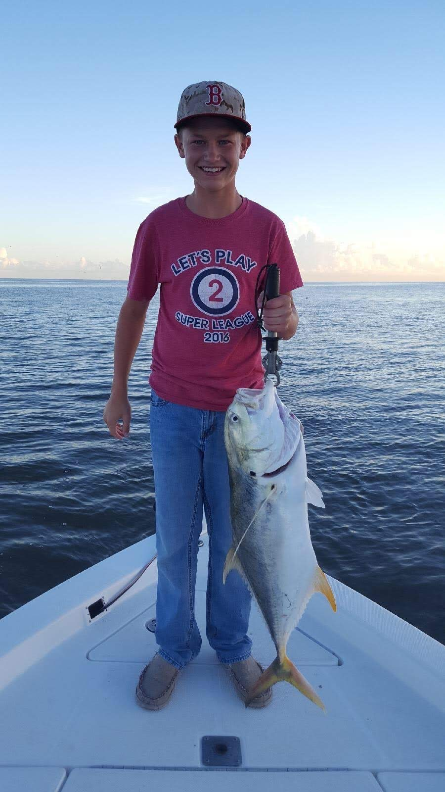
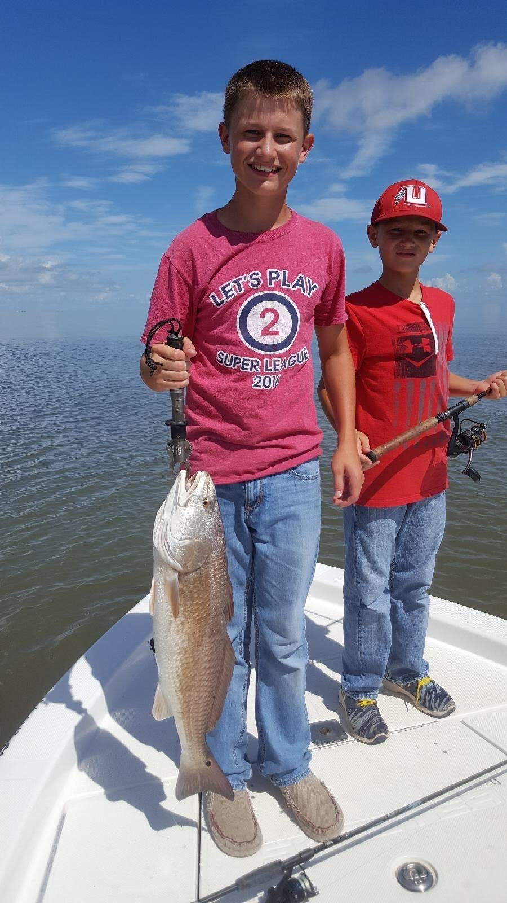
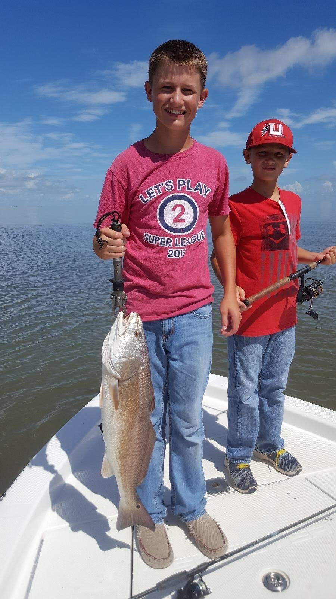
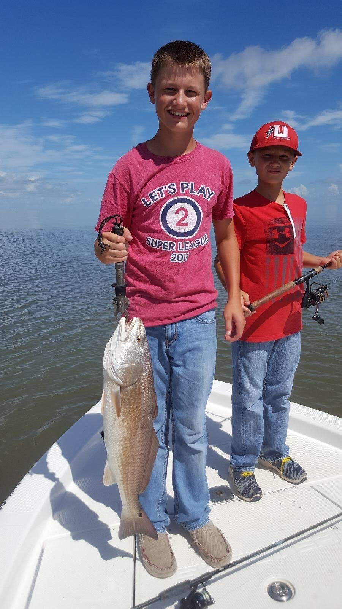
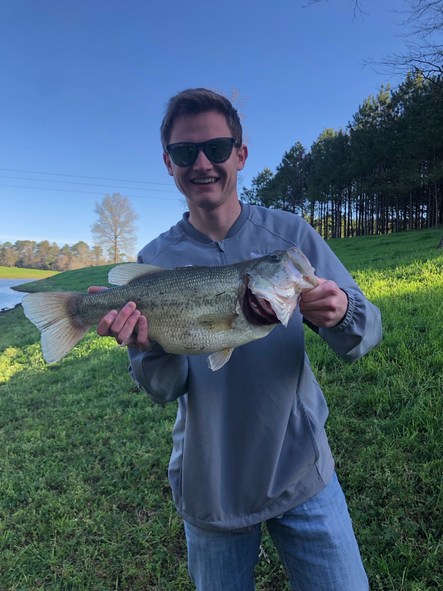
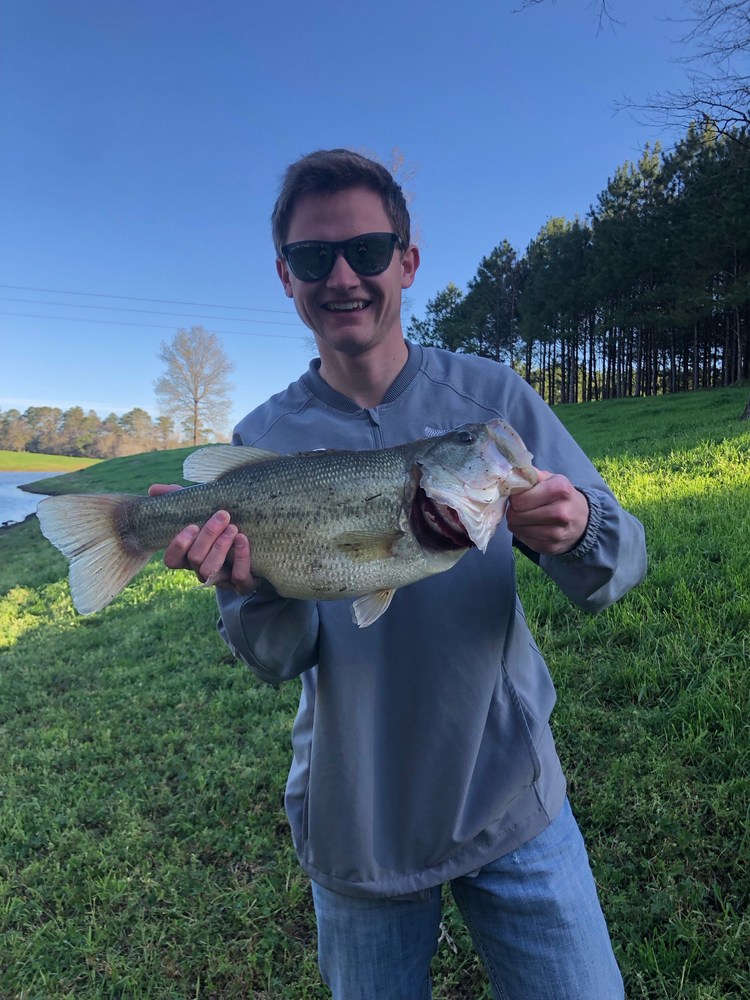
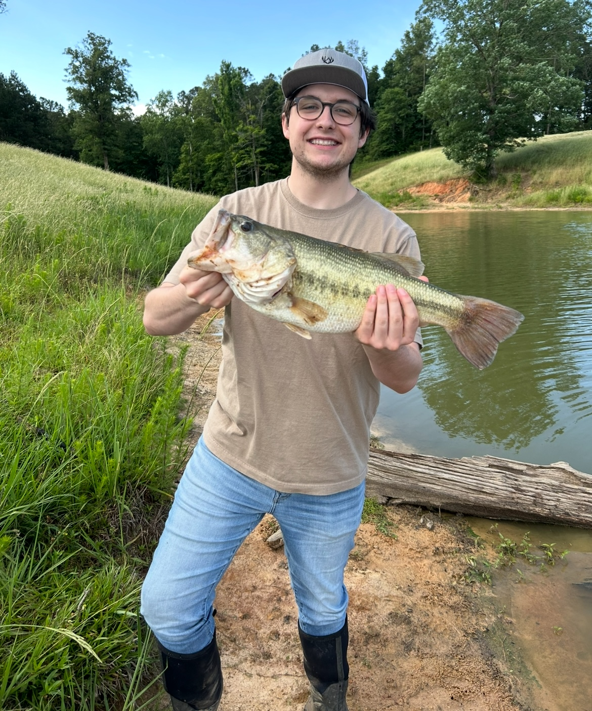

Life is Better when you're Fishing
From a young age
Even when I was young, I loved to go fishing. It was something that I did with my dad. Something that I absolutely loved was going to the Gulf Coast to fish. I would catch Redfish, speckled trout, sheephead, stingray, and so many more.

 


Bass Fishing in Mississippi
When I moved to Mississippi, It was in the middle of the Covid pandemic and I didn't have a lot to do. My Uncle was good friends with a guy who had some ponds where we would go fishing. These ponds became our honey hole where we would catch big fish. I loved fishing there and had great memories

 

I don't like to fish alone
Fishing was something that I loved to do with my family and friends. I can't really remember a time that I would just go by myself. This last summer, my childhood best friend came to Mississippi and wanted to go fishing. Naturally, we took him to the honey hole. I coached him and he was able to catch some big fish and go home with some stories. My dad and my younger brother came that day too and we had a great time.



How Do I Get Started
If you would like to start fishing here are a few things that you would need- A Fishing Rod
- A Reel
- Fishing Line
- Fishing Lures
- Spinner Baits
- Crank Baits
- Soft Plastics
- Jigs
- A buddy to go with
If you don't know where you can purchase these items, go down to your local outdoor sporting goods store or visit Bass Pro Shop's online website to find everything you need.
Bill Dance Bloopers
If you have made it to the bottom of the webpage, here is a funny video of Bill Dance
Here is a chart that shows different data on fish in different parts of the world!